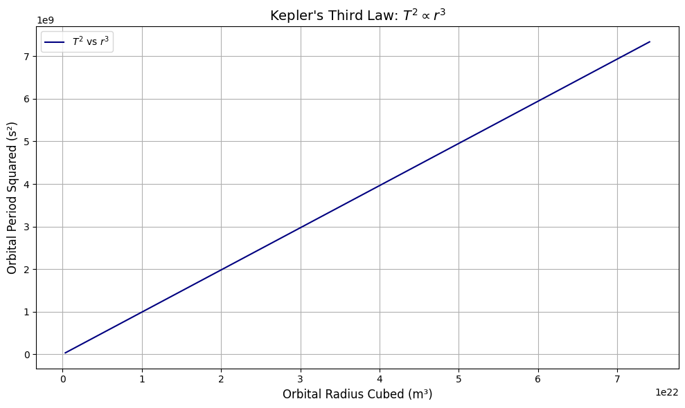
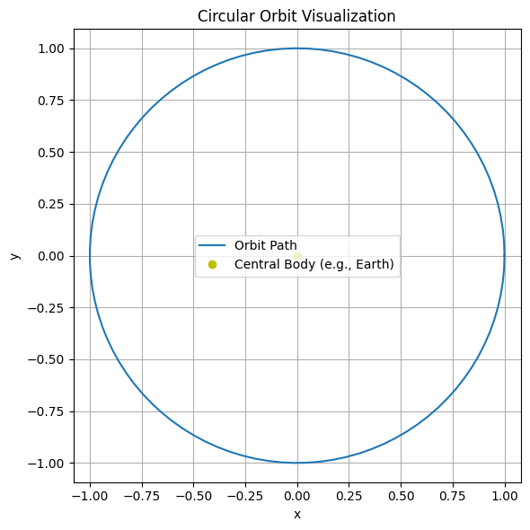

Problem 1
Orbital Period and Orbital Radius: Kepler's Third Law
Motivation
Kepler’s Third Law provides a powerful insight into celestial mechanics, stating that:
"The square of the orbital period of a planet is directly proportional to the cube of the semi-major axis of its orbit."
For circular orbits, this becomes a fundamental relationship between the orbital period and orbital radius. This principle is critical in astronomy for calculating planetary distances, masses of celestial bodies, and designing satellite orbits.
This elegant relationship provides deep insight into the motion of celestial bodies and has real-world applications in calculating satellite trajectories, determining planetary masses, and exploring distant exoplanets.
1. Derivation of Kepler’s Third Law for Circular Orbits
For an object of mass \(m\) in a circular orbit around a much more massive object of mass \(M\), gravitational force provides the required centripetal force.
Newton’s Law of Gravitation:
Centripetal Force:
Equating both:
Orbital Period:
Thus:
2. Implications in Astronomy
- Mass Estimation: Planetary masses are derived by observing their satellites' orbits.
- Distance Calculation: Semi-major axis of exoplanets can be estimated using orbital periods.
- Satellite Orbits: Engineers use this principle to design satellite altitudes and periods.
- Generalization to Elliptical Orbits: Still holds with \(r\) replaced by the semi-major axis \(a\).
3. Real-World Examples
Moon's Orbit Around Earth
- Radius \(r \approx 3.84 \times 10^8\) m
- Period \(T \approx 2.36 \times 10^6\) s
- Using \(T^2 = \frac{4\pi^2 r^3}{G M}\), we can solve for \(M \approx 5.97 \times 10^{24} \, \text{kg}\) (Earth’s mass)
Planets in the Solar System
Each planet follows \(T^2 \propto r^3\). For example:
- Earth: \(T = 1\) year, \(r = 1\) AU
- Mars: \(T^2 = 1.88^2 \approx 3.53\), \(r^3 = 1.52^3 \approx 3.51\)
4. Python Simulation: Verifying Kepler’s Third Law
import numpy as np
import matplotlib.pyplot as plt
# Constants
G = 6.67430e-11 # m^3 kg^-1 s^-2
M = 5.972e24 # Mass of Earth in kg
# Orbital radii (in meters)
radii = np.linspace(7e6, 4.2e7, 100) # 7000 km to 42000 km
T = 2 * np.pi * np.sqrt(radii**3 / (G * M)) # Orbital period
# Plot T^2 vs r^3 to verify Kepler's 3rd Law
plt.figure(figsize=(10, 6))
plt.plot(radii**3, T**2, label=r'$T^2$ vs $r^3$', color='navy')
plt.xlabel('Orbital Radius Cubed (m³)', fontsize=12)
plt.ylabel('Orbital Period Squared (s²)', fontsize=12)
plt.title("Kepler's Third Law: $T^2 \\propto r^3$", fontsize=14)
plt.grid(True)
plt.legend()
plt.tight_layout()
plt.show()

5. Circular Orbit Visualization
theta = np.linspace(0, 2*np.pi, 100)
x = np.cos(theta)
y = np.sin(theta)
plt.figure(figsize=(6, 6))
plt.plot(x, y, label="Orbit Path")
plt.plot(0, 0, 'yo', label="Central Body (e.g., Earth)")
plt.axis('equal')
plt.title("Circular Orbit Visualization")
plt.xlabel("x")
plt.ylabel("y")
plt.grid(True)
plt.legend()
plt.tight_layout()
plt.show()

6. Extension to Elliptical Orbits
Kepler's Third Law applies to elliptical orbits by replacing \(r\) with the semi-major axis \(a\):
This holds true for planets, comets, and exoplanets. For orbits with high eccentricity, the relationship remains accurate using the average distance.
Conclusion
Kepler’s Third Law reveals a universal law governing orbital motion. From satellite technology to galactic dynamics, this principle enables scientists and engineers to probe and predict celestial behaviors with precision. Through computational modeling, we verified:
— bridging classical physics and modern astrophysics.